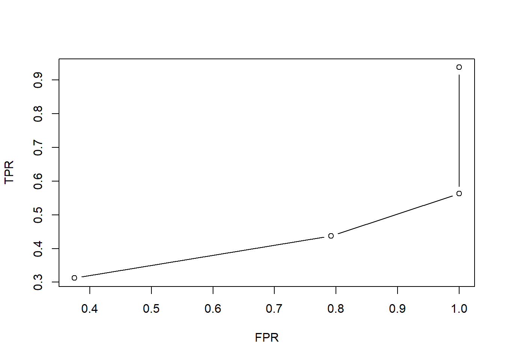

library(tidyverse)
df <- read.csv("https://raw.githubusercontent.com/Siganz/CUNY_Assignments/refs/heads/main/607/assignment_11/movie_ratings.csv") |>
select(name, title, rating)
# Global mean
global_mean <- mean(df$rating, na.rm = TRUE)
# Rater effects
s_name <- df |>
summarize(rater_mean = mean(rating, na.rm = TRUE), .by = name) |>
mutate(rater_effect = rater_mean - global_mean)
# Movie/item effects
s_title <- df |>
summarize(item_mean = mean(rating, na.rm = TRUE), .by = title) |>
mutate(item_effect = item_mean - global_mean)
# Fill original NA ratings
df2 <- df |>
left_join(s_name, by = "name") |>
left_join(s_title, by = "title") |>
mutate(
rating = if_else(
is.na(rating),
round(global_mean + rater_effect + item_effect),
rating
)
)
# Add Shawn, who has no ratings
df3 <- df2 |>
distinct(title, item_effect) |>
mutate(
name = "Shawn",
rater_effect = 0,
rating = round(global_mean + item_effect)
) |>
select(name, title, rating)
# Combine fixed original data + Shawn rows
movie_ratings_fixed <- df2 |>
select(name, title, rating) |>
bind_rows(df3)
# Write CSV
write.csv(movie_ratings_fixed, "movie_ratings_fixed.csv", row.names = FALSE)
movie_ratings_fixedassignment 11
Approach
Prelim
I’m going to need to use the previous data which was created via assignment 3, so I brought over the code and the data. I modified the code to create an output called movie_ratings_fixed.csv that I will use for the recommender.
Main
I’ll utilize recommenderlab and I’ll do their UBCF method. The github has an easy to follow usage. So I’ll just use that and replace the data with the one developed in assignment 3.
df <- read.csv("https://raw.githubusercontent.com/Siganz/CUNY_Assignments/refs/heads/main/607/assignment_11/movie_ratings_fixed.csv")
train <- MovieLense100[1:300]
rec <- Recommender(train, method = "UBCF")
rec
pre <- predict(rec, MovieLense100[301:302], n = 5)
pre
scheme <- evaluationScheme(MovieLense100, method = "cross-validation", k = 10, given = -5,
goodRating = 4)
schemeCodebase
library(tidyverse)── Attaching core tidyverse packages ──────────────────────── tidyverse 2.0.0 ──
✔ dplyr 1.2.0 ✔ readr 2.2.0
✔ forcats 1.0.1 ✔ stringr 1.6.0
✔ ggplot2 4.0.2 ✔ tibble 3.3.1
✔ lubridate 1.9.5 ✔ tidyr 1.3.2
✔ purrr 1.2.1
── Conflicts ────────────────────────────────────────── tidyverse_conflicts() ──
✖ dplyr::filter() masks stats::filter()
✖ dplyr::lag() masks stats::lag()
ℹ Use the conflicted package (<http://conflicted.r-lib.org/>) to force all conflicts to become errorslibrary(recommenderlab)Warning: package 'recommenderlab' was built under R version 4.5.3Loading required package: Matrix
Attaching package: 'Matrix'
The following objects are masked from 'package:tidyr':
expand, pack, unpack
Loading required package: arulesWarning: package 'arules' was built under R version 4.5.3
Attaching package: 'arules'
The following object is masked from 'package:dplyr':
recode
The following objects are masked from 'package:base':
abbreviate, write
Loading required package: proxyWarning: package 'proxy' was built under R version 4.5.3
Attaching package: 'proxy'
The following object is masked from 'package:Matrix':
as.matrix
The following objects are masked from 'package:stats':
as.dist, dist
The following object is masked from 'package:base':
as.matrixdf <- read.csv("https://raw.githubusercontent.com/Siganz/CUNY_Assignments/refs/heads/main/607/assignment_11/movie_ratings.csv")
rating_matrix <- df |>
select(name, title, rating) |>
pivot_wider(names_from = title, values_from = rating, values_fill = NA) |>
column_to_rownames("name") |>
as.matrix() |>
as("realRatingMatrix")
rec <- Recommender(rating_matrix, method = "UBCF")
top_rec <- predict(rec, rating_matrix, n = 1)
as(top_rec, "list")$`0`
[1] "Sinners"
$`1`
[1] "The Materialist"
$`2`
[1] "One Battle After Another"
$`3`
[1] "Begonia"
$`4`
[1] "Wicked for Good"
$`5`
[1] "Sinners"results <- tibble(
user = rownames(rating_matrix),
recommended = as(top_rec, "list")) |>
unnest(recommended) |>
rename(movie = recommended)
scheme <- evaluationScheme(rating_matrix, method = "cross-validation", k = 4, given = -2, goodRating = 4)
eval_results <- evaluate(scheme, method = "UBCF", type = "topNList", n = 1:5)UBCF run fold/sample [model time/prediction time]
1 [0sec/0.04sec]
2 [0sec/0sec]
3 [0sec/0sec]
4 [0sec/0sec] avg(eval_results) TP FP FN TN N precision recall TPR
[1,] 0.3333333 0.6666667 0.75000000 1.2500000 3 0.3333333 0.3125 0.3125
[2,] 0.5000000 1.5000000 0.58333333 0.4166667 3 0.2500000 0.4375 0.4375
[3,] 0.5833333 1.9166667 0.50000000 0.0000000 3 0.2083333 0.5625 0.5625
[4,] 1.0000000 1.9166667 0.08333333 0.0000000 3 0.2777778 0.9375 0.9375
[5,] 1.0000000 1.9166667 0.08333333 0.0000000 3 0.2777778 0.9375 0.9375
FPR n
[1,] 0.3750000 1
[2,] 0.7916667 2
[3,] 1.0000000 3
[4,] 1.0000000 4
[5,] 1.0000000 5plot(eval_results)
Video
df |> arrange(name, desc(rating)) name title release_year rating rated_at
1 Alex One Battle After Another 2025 5 2026-02-04 13:57:13.204884
2 Alex Begonia 2025 4 2026-02-04 13:57:13.204884
3 Alex Wicked for Good 2025 4 2026-02-04 13:57:13.204884
4 Alex The Materialist 2025 3 2026-02-04 13:57:13.204884
5 Alex Sinners 2025 NA 2026-02-04 13:57:13.204884
6 Bri Wicked for Good 2025 5 2026-02-04 13:57:13.204884
7 Bri One Battle After Another 2025 4 2026-02-04 13:57:13.204884
8 Bri Sinners 2025 4 2026-02-04 13:57:13.204884
9 Bri Begonia 2025 3 2026-02-04 13:57:13.204884
10 Bri The Materialist 2025 NA 2026-02-04 13:57:13.204884
11 Chen Begonia 2025 5 2026-02-04 13:57:13.204884
12 Chen Wicked for Good 2025 4 2026-02-04 13:57:13.204884
13 Chen Sinners 2025 4 2026-02-04 13:57:13.204884
14 Chen The Materialist 2025 3 2026-02-04 13:57:13.204884
15 Chen One Battle After Another 2025 NA 2026-02-04 13:57:13.204884
16 Devi Sinners 2025 5 2026-02-04 13:57:13.204884
17 Devi The Materialist 2025 4 2026-02-04 13:57:13.204884
18 Devi One Battle After Another 2025 3 2026-02-04 13:57:13.204884
19 Devi Wicked for Good 2025 3 2026-02-04 13:57:13.204884
20 Devi Begonia 2025 NA 2026-02-04 13:57:13.204884
21 Eli The Materialist 2025 5 2026-02-04 13:57:13.204884
22 Eli One Battle After Another 2025 4 2026-02-04 13:57:13.204884
23 Eli Begonia 2025 3 2026-02-04 13:57:13.204884
24 Eli Sinners 2025 3 2026-02-04 13:57:13.204884
25 Eli Wicked for Good 2025 NA 2026-02-04 13:57:13.204884
26 Fran One Battle After Another 2025 5 2026-02-04 13:57:13.204884
27 Fran Wicked for Good 2025 4 2026-02-04 13:57:13.204884
28 Fran The Materialist 2025 4 2026-02-04 13:57:13.204884
29 Fran Begonia 2025 3 2026-02-04 13:57:13.204884
30 Fran Sinners 2025 NA 2026-02-04 13:57:13.204884results# A tibble: 6 × 2
user movie
<chr> <chr>
1 Alex Sinners
2 Bri The Materialist
3 Chen One Battle After Another
4 Devi Begonia
5 Eli Wicked for Good
6 Fran Sinners The results show that the recommendations for each person are movies they didn’t watch, which is accurate to the model.
library(tidyverse)
library(recommenderlab)
df <- read.csv("https://raw.githubusercontent.com/Siganz/CUNY_Assignments/refs/heads/main/607/assignment_11/movie_ratings.csv")Upon reviewing it makes little sense to do a recommendation model, probably should’ve done a missing value model instead.
rating_matrix <- df |>
select(name, title, rating) |>
pivot_wider(names_from = title, values_from = rating, values_fill = NA) |>
column_to_rownames("name") |>
as.matrix() |>
as("realRatingMatrix")
rec <- Recommender(
rating_matrix,
method = "UBCF",
parameter = list(method = "Cosine", nn = 3)
)
pred <- predict(
rec,
rating_matrix,
type = "ratings"
)
original <- as(rating_matrix, "matrix")
predicted <- as(pred, "matrix")
missing <- is.na(original)
filled_missing_values <- tibble(
name = rownames(original)[row(original)[missing]],
title = colnames(original)[col(original)[missing]],
predicted_rating = predicted[missing]
)
print(filled_missing_values)# A tibble: 6 × 3
name title predicted_rating
<chr> <chr> <dbl>
1 Chen One Battle After Another 4.43
2 Devi Begonia 4.00
3 Eli Wicked for Good 4.28
4 Bri The Materialist 4.66
5 Alex Sinners 4
6 Fran Sinners 4 movie_means <- df |>
group_by(title) |>
summarise(
mean_rating = mean(rating, na.rm = TRUE),
n_ratings = sum(!is.na(rating)),
.groups = "drop"
) |>
arrange(desc(mean_rating))
print(movie_means)# A tibble: 5 × 3
title mean_rating n_ratings
<chr> <dbl> <int>
1 One Battle After Another 4.2 5
2 Sinners 4 4
3 Wicked for Good 4 5
4 The Materialist 3.8 5
5 Begonia 3.6 5Interesting to see that it goes beyond just calculating the mean.